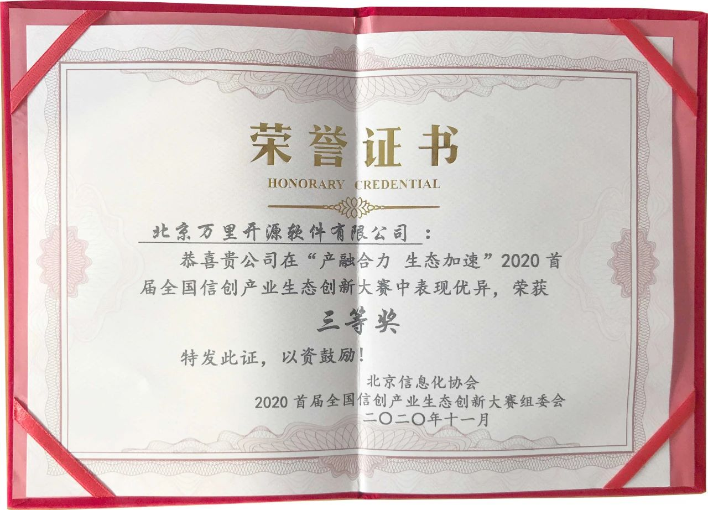
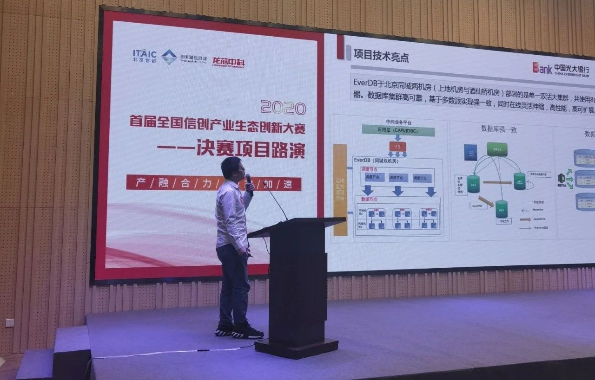

万里数据库再获肯定，荣获首届全国信创大赛大奖
近日，以“产融合力 生态加速”为主题的2020首届全国信创产业生态创新大赛颁奖盛典在北京经开区国家信创园隆重举行，活动聚集了信创领域关键政府部门和头部企业，是全面展示全国信创产业最新技术、最新产品和应用方案的重要窗口。万里数据库联合光大银行凭借「基于信息技术应用创新架构的“金融中间业务云平台国产数据库改造项目”」脱颖而出，荣获本次信创产业生态创新大赛三等奖。

本次获奖的「基于信息技术应用创新架构的“金融中间业务云平台国产数据库改造项目”」，通过基于国产软硬件的分布式数据库替代国外的服务器、CPU、操作系统、中间件和数据库，摆脱对国外技术和产品的依赖，实现全面自主可控。其中数据库国产化替代是该项目的重点与难点，采用由光大银行、光大科技与万里数据库联合研发的EverDB分布式数据库。

万里数据库副总经理高孝鑫进行项目讲解
本次信创产业生态创新大赛在北京市经济和信息化局、中国电子工业标准化技术协会信息技术应用创新工作委员会指导下，由北京信息化协会信息技术应用创新工作委员会、北京经开区国家信创园、龙芯中科技术有限公司联合主办。旨在推动新基建建设，推动我国经济高质量发展、保障国家信息安全的技术产业体系。通过大赛选拔优秀信创人才，充分融合产业资源和投融资体系，激发企业潜能与创新，以此不断推动信创产业发展，培养和打造行业生态。
本次大赛经过两个月的激烈角逐，经过项目初审、产融赋能生态加速期、决赛评选等赛程，评委由技术专家、产业专家、投资专家共同组成，确保评比的水准及赛事的公平公正。「基于信息技术应用创新架构的“金融中间业务云平台国产数据库改造项目”」获此殊荣，是评委及业界对光大银行和万里数据库在信息技术创新应用方面的重要肯定。未来，两家机构将把本项目取得的成果向更多的金融机构输出，为加快国家信息技术应用创新贡献力量。